Objetivo
Al terminar, una Plataforma irá y vendrá sobre el hueco del nivel, y la rana podrá subirse para cruzar. Todo se hace desde el editor: nodos, Inspector y panel de Animación.
Partimos de: El proyecto del tutorial 2: el nivel con un hueco que la rana no puede saltar, y el jugador con sus animaciones.
Nodos y conceptos
AnimatableBody2DCuerpo físico que no se mueve con la física, pero que, si lo movemos (con una animación o con código), empuja y arrastra a los cuerpos que lleva encima.
AnimationPlayerNodo que anima cualquier propiedad de cualquier nodo: posición, color, escala… Guarda las animaciones como pistas con claves.
Clave (keyframe)Un valor en un momento. Entre dos claves, Godot calcula los valores intermedios.
Ping-pongModo de bucle que reproduce la animación hacia delante y luego hacia atrás, sin saltos: ida y vuelta.
One Way CollisionLa forma solo choca por arriba: el jugador puede atravesarla desde abajo y quedarse de pie encima.
Paso a paso
1Punto de partida
Abre nivel.tscn. En medio del nivel hay un hueco demasiado ancho para saltarlo. Vamos a poner una plataforma que lo cruce.
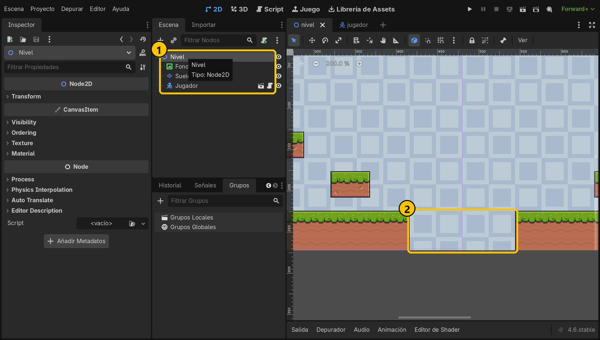
- 1Escena del nivel
- 2El hueco
2Añade un AnimatableBody2D
Con Nivel seleccionado, pulsa + y busca AnimatableBody2D. Es un StaticBody2D especial: cuando se mueve, arrastra a lo que tiene encima. Créalo y llámalo Plataforma.
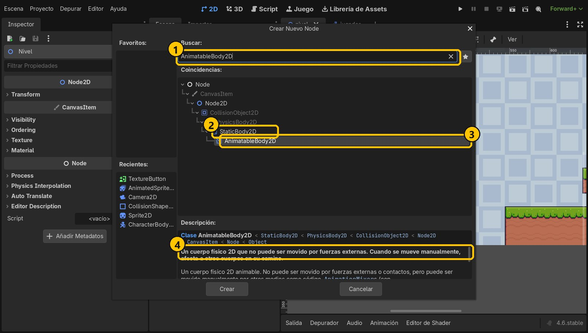
- 1AnimatableBody2D
- 2Es un StaticBody2D
- 3AnimatableBody2D
- 4Mueve a otros cuerpos
3Dibujo y forma
Añade a Plataforma un Sprite2D con la textura assets/plataformas/plataforma.png (en el desplegable de Texture, Carga Rápida). Añade también un CollisionShape2D y en Shape elige Nuevo RectangleShape2D.
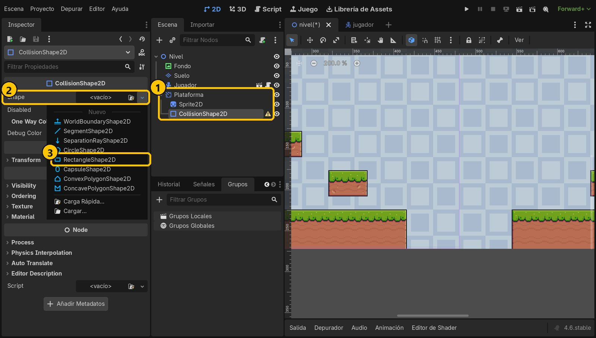
- 1Plataforma y sus hijos
- 2Shape
- 3RectangleShape2D
4Tamaño y colisión de un solo sentido
Haz clic en el rectángulo y pon Size 32 × 8, como el dibujo. Activa One Way Collision: la plataforma solo choca por arriba.
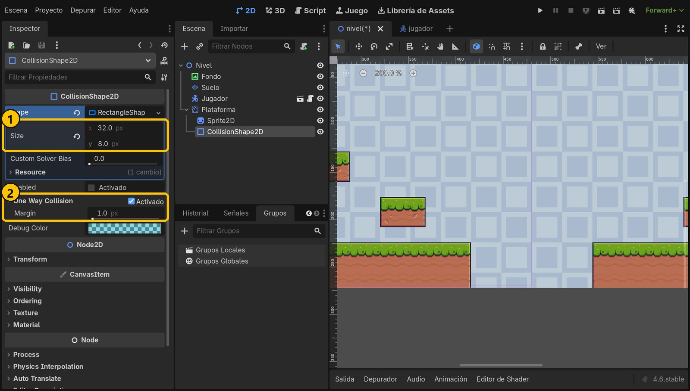
- 132 × 8
- 2Solo por arriba
5Coloca la plataforma
Selecciona Plataforma y pon Position x = 432, y = 228: pegada al borde izquierdo del hueco, a la altura del suelo, para que la rana pueda subirse andando. Deja Sync to Physics activado.
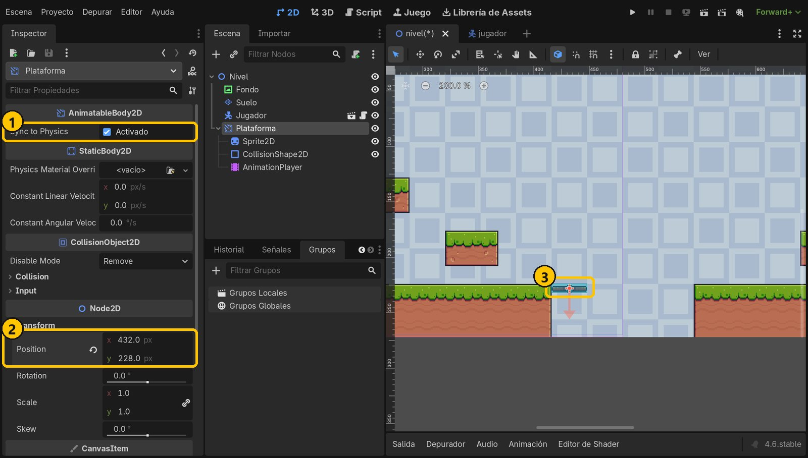
- 1Sync to Physics
- 2432, 228
- 3Junto al borde
6Añade un AnimationPlayer
Con Plataforma seleccionada, añade un hijo AnimationPlayer. Abajo se abre el panel Animación.
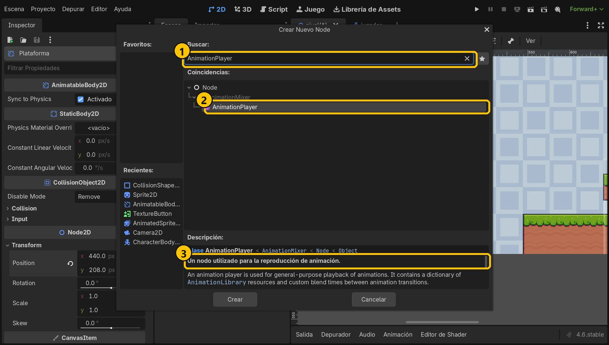
- 1AnimationPlayer
- 2AnimationPlayer
- 3Reproduce animaciones
7Crea la animación «mover»
En el panel, pulsa Animación → Nueva…, escribe mover y acepta. Pon la duración a 2 segundos (el campo del reloj, a la derecha).
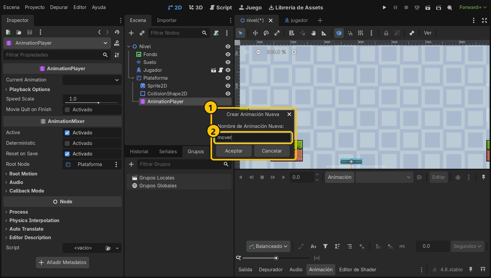
- 1Animación nueva
- 2mover
8Primera clave: el punto de salida
Selecciona Plataforma. Con el panel de animación abierto, junto a cada propiedad aparece una llave. Con el cursor del tiempo en 0, pulsa la llave de Position y luego Crear: se guarda la posición 432, 228.
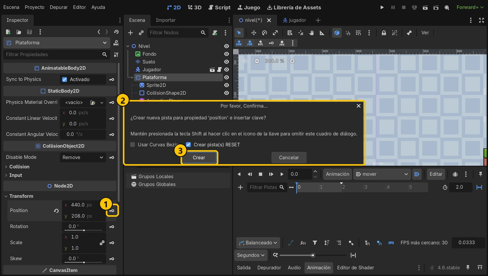
- 1Llave de Position
- 2Nueva pista
- 3Crear
9Segunda clave, bucle y autoplay
Lleva el cursor del tiempo a 2, cambia Position x a 528 (el otro lado del hueco) y pulsa otra vez la llave. Pulsa el botón de bucle hasta que salga ping-pong (ida y vuelta) y activa Reproducir automáticamente al cargar.
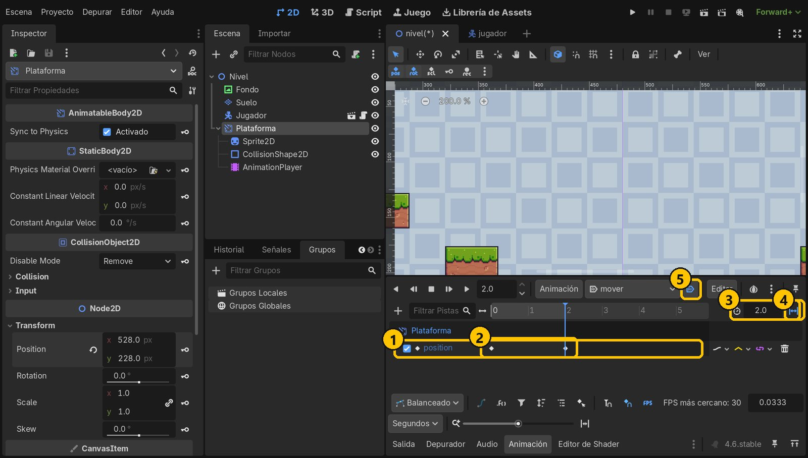
- 1Pista position
- 2Claves en 0 s y 2 s
- 32 segundos
- 4Ping-pong
- 5Autoplay
10Que se mueva al ritmo de la física
Selecciona el AnimationPlayer y en Callback Mode → Process elige Physics. Así la plataforma se mueve a la vez que el jugador y lo lleva sin tirones. Guarda.
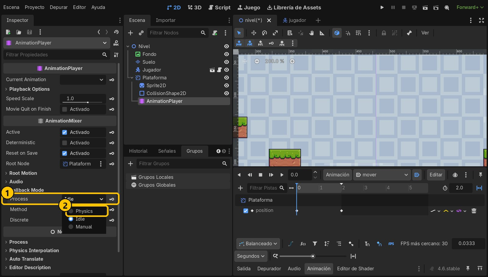
- 1Callback Mode
- 2Physics
11Ejecuta y cruza
Ejecuta con F5. Ve hasta el hueco, espera a que llegue la plataforma y súbete andando: te lleva al otro lado. Prueba a quedarte quieto encima: la rana viaja con ella.
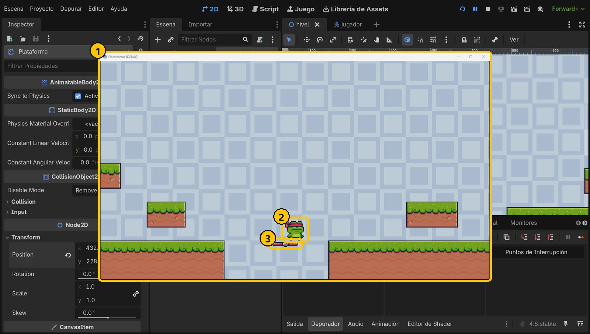
- 1El juego
- 2Subida
- 3La plataforma la lleva
Resumen
- Un AnimatableBody2D lleva encima a los cuerpos cuando se mueve.
- Un AnimationPlayer anima propiedades con claves: aquí, dos posiciones.
- Bucle ping-pong para ir y volver, y proceso Physics para moverse a la vez que el jugador.
Si algo falla
- La plataforma no se mueve al ejecutar. Activa Reproducir automáticamente al cargar en la animación
mover. - La plataforma se mueve pero la rana se queda atrás o se cae. Usa un AnimatableBody2D (no un StaticBody2D), con Sync to Physics activado y el AnimationPlayer en Process: Physics.
- La plataforma salta de golpe al principio. Pon el bucle en ping-pong: con el bucle normal vuelve de golpe a la primera clave.
- Se mueve toda la escena o no pasa nada. El AnimationPlayer debe ser hijo de Plataforma y las claves deben ponerse con Plataforma seleccionada.
Prueba tú
- Cambia la duración a 4 segundos: ¿va más rápida o más lenta?
- Haz una plataforma que suba y baje: anima Position y en vez de x.
- Usa
plataforma_on.png(8 dibujos) con un AnimatedSprite2D para que la plataforma tenga la hélice girando.